TNAU in collaboration with Sugar Cane Breeding Institute, Coimbatore released many high yielding varieties with high recovery to suit various eco systems and other biotic and abiotic problematic area and of which the following listed varieties can be recommended for higher cane productivity
For the varieties released from Tamil Nadu Agricultural University for supply of primary seed materials the Sugarcane Research Stations at Cuddalore, Sirugamani and Melalathur may be contacted. For other varieties promoted by the factories, for seed materials the concerned factories may be contacted.
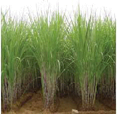 |
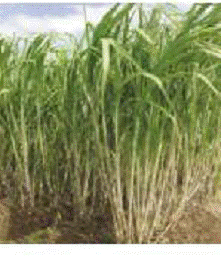 |
| Co 86032 |
Co 99004 |
Crop Management
Main Field Preparation for Planting Sugarcane
1. Preparation of Field
a) Wetland (Heavy soils): In wetlands, preparatory cultivation by ploughing the land and bringing the soil to fine tilth could not be done.
i. After harvest of the paddy crop, form irrigation and drainage channels of 40 cm depth and 30 cm width at intervals of 6 m across the field and along the field borders.
ii Form ridges and furrows with a spacing of 80 cm between rows with spade.
iii.Stir the furrows with hand hoes and allow the soil to weather for 4 to 5 days.
b) Problem soils with excessive soil moisture:
In problem soils, with excessive moisture where it is difficult to drain water, form raised beds at 30 cm intervals with Length - 5 m, Width - 80 cm, and Height -15 cm.
Garden lands with medium and light soils:
In medium and light soil irrigated by flow or lift irrigation adopt the following:
- The initial ploughing with two disc plough followed by eight disc plough and using cultivator for deep ploughing followed by one time operation of rotovator to pulverize the soil to get a fine tilth, free of weeds and stubbles.
- Level the field for proper irrigation.
- Open ridges and furrows at 80 cm apart with the help of victory plough or tractor drawn ridger. The depth of furrow must be 20 cm.
- Open irrigation channels at 10 m intervals.
2. Basal application of organic manures:
Apply FYM at 12.5 t/ha or compost 25 t/ha or filter press mud at 37.5 t/ha before the last ploughing under gardenland conditions. In wetlands this may be applied along the furrows and incorporated well.
Preparation of reinforced compost from sugarcane trash and pressmud:
Spread the sugarcane trash to a thickness of 15 cm over an area of 7 m x 3 m. Then apply pressmud over this trash to a thickness of 5 cm. Sprinkle the fertilizer mixture containing mussoorie rock phosphate, gypsum and urea in the ratio of 2:2:1 over these layers at the rate of 5 kg/100 kg of trash. Moist the trash and pressmud layers adequately with water.
Repeat this process till the entire heap rises to a height of 1.5 m. Use cowdung slurry instead of water to moist the layer wherever it is available. Cover the heap with a layer of soil and pressmud at 1:1 ratio to a thickness of 15 cm.
Leave the heap as such for three months for decomposition. Moist the heap once in 15 days. During rainy season, avoid moistening the heap. After three months, turn and mix the heap thoroughly and form a heap and leave it for one more month. Then turn and mix the heap thoroughly at the end of the fourth month. Moist the heap once in 15 days during 4th and 5th month also. This method increases the manurial value of trash compost by increasing, N, P and Ca content. It also brings down the C:N ratio by 10 times as compared to raw cane trash.
Composition of cane trash, pressmud and cane trash compost
| Major nutrients |
Cane trash |
Pressmud Percent |
Cane trash compost |
| Nitrogen (N) |
0.40 |
1.90 |
1.60 |
| Phosphorus (P) |
0.13 |
1.50 |
1.10 |
| Potassium(K) |
0.40 |
0.50 |
0.40 |
| Calcium (Ca) |
0.56 |
3.00 |
1.00 |
| Magnesium (Mg) |
0.30 |
2.00 |
0.60 |
| Sulphur (S) |
0.12 |
0.50 |
0.48 |
| Micronutrients |
Cane trash |
Pressmud PPM |
Cane trash compost |
| Iron (Fe) |
360 |
2240 |
2710 |
| Manganese (Mn) |
110 |
400 |
450 |
| Zinc (Zn) |
90 |
360 |
370 |
| Copper (Cu) |
30 |
130 |
80 |
| C:N ratio |
113:1 |
16:1 |
22:1 |
3. Basal Application Of Fertilizer
- If soil test is not done, follow blanket recommendation of NPK @ 300:100:200 kg/ha Apply super phosphate (625 kg/ha) along the furrows and incorporate with hand hoe.
- Apply 37.5 kg Zinc sulphate/ha and 100 kg Ferrous sulphate/ha to zinc and iron deficient soils.
- Application of sulphur in the form of Gypsum @ 500 kg /ha to sulphur deficient soils to increase the cane yield and juice quality
Management Of Main Field Operations
1.Preparation Of Setts For Planting
Take seed material from short crop (6 to 7 months age) free from pests and diseases incidence.
- Detrash the cane with hand before setts preparation.
- Use sharp knife or sett cutting machine developed by TNAU to prepare setts without splits.
- Discard setts with damaged buds, sprouted buds, splits etc.
- Sett treatment with Azospirillum: Prepare the slurry with 10 packets (2000 g)/ha of Azospirillum inoculum with sufficient water and soak the setts in the slurry for 15 minutes before planting.
2. Sett Treatment
- Select healthy setts for planting.
- The setts should be soaked in 100 litres of water dissolved with 50g Carbendazim, 200ml malathion and 1 kg urea for 15 minutes.
- Treat setts with Aerated steam at 50°C for one hour to control primary infection of grassy shoot disease.
3. Seed Rate
75000 two-budded setts/ha.
4. Planting
Different systems of planting is not found to influence the millable cane population, commercial cane sugar per cent, cane and sugar yield.
- Irrigate the furrows to form a slurry in wet land condition (Heavy soil)
-
Place the setts along the centre of the furrows, accommodating 12 buds/metre length. Keep the buds in the lateral position and press gently beneath the soil in the furrow.Avoid exposure of setts to sunlight.
-
Plant more setts near the channel or double row planting at every 10th row for gap filling, at later stage.In dry/ garden land dry method of planting may be followed. First arrange the setts along the furrows, cover the setts with soil and then irrigate.
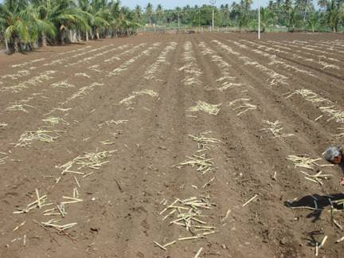
Distributed Setts in Field |
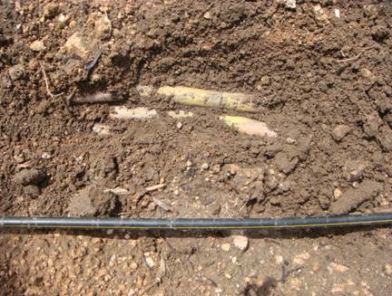
Place the setts along the centre of the furrows
|
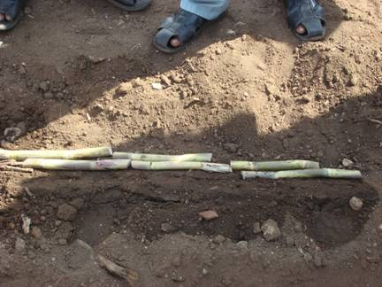 |
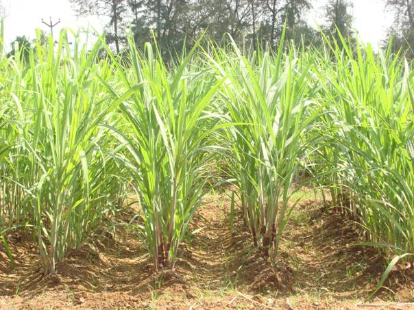 |
Sugarcane in ridges and furrows
V.Improved technologies on cane planting systems
Mechanisation of planting
- TNAU mechanical planter is useful for cost effective planting with saving of Rs.3750 / ha and it can cover an area of 1.5ha/day
- Reduces the human labour drudgery and seed rate up to 5 tones/ha.
- Paired row system of planting double side planting of sugarcane setts with 150 + 30 cm spacing for Astraf 8000 series (Mechanical harvester) operated areas and 150 + 30 cm spacing for New Holland 4000 series operated areas may be adopted with single row of cane planting.
- Sugarcane cultivates under subsurface drip system the laterals may be placed 20cm depth in the furrows and setts are placed 5cm above the laterals.
- For sustainable sugarcane initiative system (SSI) transplanting young chip bud seedling raised in portray (25-35 days old) in wide spacing (5x2 feet) in the main field with drip fertigation system.
- Daincha / Sunhemp intercropping in the wider spaced cane cultivated area for improving soil health and reduce the weed infestation. It also reduces early shoot borer incidences and increases cane yield.
- Plant the setts on one side of the ridge for 80 cm spacing in heavy soil to avoid sett rot resulted better germination
- Sow rhizobium treated green manure seeds @ 10kg/ha on the opposite side of ridge with 10cm. Spacing on or before 3 days after planting.
- Incorporate the green manure crop 50-60 days after planting in between interow of wider spaced crop and give partial earthing up with recommended dose of N fertilizer on 90 – 100 day after planting.
- Introduction of power weeder with rotovator for weeding and earthing up with ridger to save the cost on labour and also to reduce human drudgery.
Four feet row with two line planting in each row.
Daincha / Sunhemp intercropping for improving soil health; it also reduces early shoot borer incidences and increases cane yield.
- Plant the setts on one side of the ridge.Sow rhizobium treated green manure seeds @ 10kg/ha on the opposite side of ridge with 10cm. Spacing on or before 3 days after planting.
- Incorporate the green manure crop 50-60 days after planting and give partial earthing up with recommended dose of N fertilizer.
Introduction of power weeder for weeding and earthing up to save the cost on labour and also to reduce human drudgery.
5. Filling up gaps
- Fill the gaps, if any, within 30 days after planting with sprouted setts.
- Gap filling with two budded setts/ poly bag seedlings within 15 to 20 days after planting to maintain optimum plant stand.
- Maintain adequate moisture for 3 weeks for proper establishment of the sprouted setts.
6. Trash Mulching
Mulch the ridges uniformly with cane trash to a thickness of 10 cm within a week after planting. It helps to tide over drought, conserves moisture, reduce weed population and minimise shoot borer incidence. Mulch the field with trash after 21 days of planting in heavy soil and wetland conditions. Avoid trash mulching in areas where incidence of termites is noticed.
7. Raising Inter crops
In areas of adequate irrigation, sow one row of soybean or blackgram or greengram along the centre of the ridge on the 3rd day of planting. Intercropping of daincha or sunhemp along ridges and incorporation of the same on the 45th day during partial earthing up helps to increase the soil fertility, and also the cane yield. Especially Intercropping of Co.1 Soybean gives an yield of 800 kg/ha without any adverse effect on cane yield.
8. Weed Management
Weed Management in pure crop of Sugarcane
- Wherever weed menace is higher, one line weeding along the crop row and spade digging of ridges have to be done on 30, 60 and 90 DAP
- Spray Atrazine 2 kg or Oxyflurofen 750 ml/ha mixed in 600 liters of water as pre emergence herbicide on the 3rd day of planting, using deflector or fan type nozzle fitted with knapsack sprayer.
- The pre emergence application of atrazine @ 1.0 kg a.i. ha-1 on 3 DAP followed by post emergence directed application of glyphosate @ 1.0 lit ha-1on 45 DAP with hood+ one hand weeding on 90 DAP registered the maximum cane yield.
- If pre-emergence spray is not carried out, go in for post-emergence spray of Grammaxone litre + 2,4-D sodium salt 2.5 kg/ha in 600 liter of water on 21st day of planting.
- If the parasitic weed striga is a problem, post-emergence application of 2,4-D sodium salt @ kg/ha in 500 litre of water/ha may be done. 2, 4-D spraying should be avoided when neighbouring crop is cotton or bhendi. Apply 20% urea also for the control of striga as direct spray.
- Pre- plant application of glyphosate at 2.0 kg ha-1 along with 2% ammonium sulphate at 21 days before planting of sugarcane followed by post emergence direct spraying of glyphosate at 2.0 kg ha-1 along with 2% ammonium sulphate with a special hood on 30 DAP suppressed the nut sedges (Cyperus rotandus) and provided weed free environment.
- If herbicide is not applied work the junior-hoe along the ridges on 25, 55 and 85 days after planting for removal of weeds and proper stirring. Remove the weeds along the furrows with hand hoe. Otherwise operate power tiller fitted with tynes for intercultivation.
- Control of creeper weeds post emergence directed application of fernoxone (2, 4 –D sodium salt) @ 2 gm + 10 gm of urea per liter of water may be sprayed over the creeper weeds.
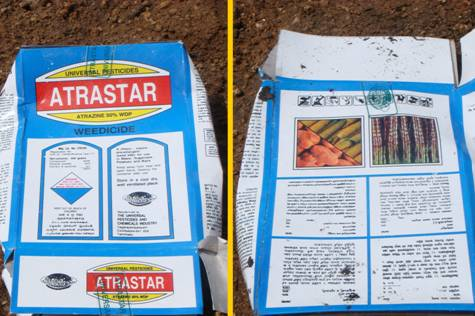
Spray pre emergence herbicide on the 3rd day of planting
(Atrazine 2 kg +500 ltr. of water) |
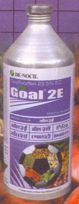 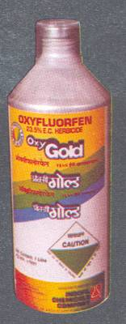
(Oxyflurofen 750 ml/ha +500 ltr. of water) |
Striga control in sugarcane
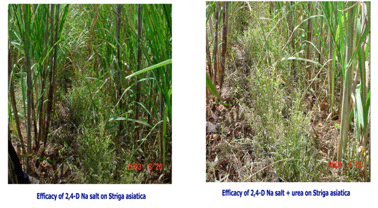
Weed management in Sugarcane intercropping system
Premergence application of Thiobencarb @ 1.25 kg ai/ha under intercropping system in Sugarcane with Soybean, blackgram or groundnut gives effective weed control. Raising intercrops is not found to affect the cane yield and quality.
9. Earthing Up
After application of 3rd dose fertilizer (90 days), work victory plough along the ridges for efficient and economical earthing up. At 150 days after planting, earthing up may be done with spade.
10. Detrashing
Remove the dry cane leaves on 150th and 210th day to avoid borer infestation.
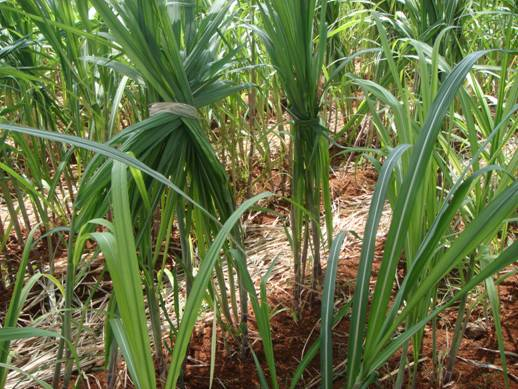 |
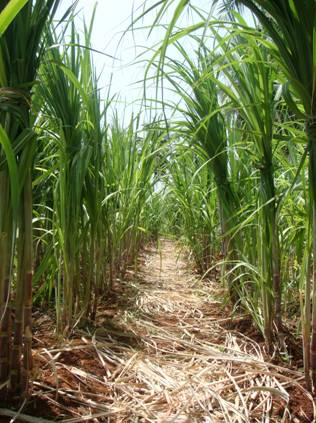 |
11. Propping
Do double line propping with trash twist at the age of 210 days of the crop.
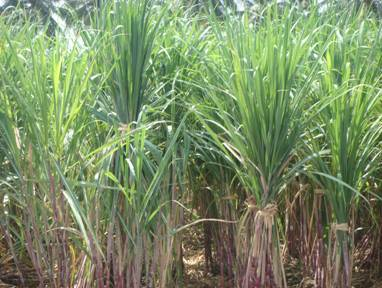 |
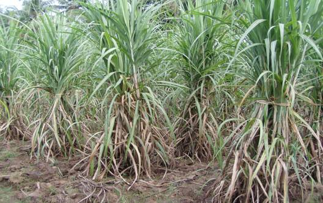 |
VI. Top Dressing with Fertilizers
a. Soil application
Apply 275 kg of nitrogen and 112.5 kg of K2O/ha in three equal splits at 30, 60 and 90 days in coastal and flow irrigated belts (assured water supply areas). In the case of lift irrigation belt, apply 225 kg of nitrogen and 112.5 kg of K2O/ha in three equal splits at 30, 60 and 90 days (water scarcity areas). For jaggery areas, apply 175 kg of nitrogen and 112.5 kg of K2O/ha in three equal splits on 30, 60 and 90 days.
Nitrogen Saving
a. Neem Cake Blended Urea: Apply 67.5 kg of N/ha + 27.5 kg of Neem Cake at 30 days and repeat on 60th and 90th days.
Note: Neem cake blending: Powder the required quantity of neem cake and mix it with
urea thoroughly and keep it for 24 hours. Thus, 75 kg of nitrogen/ha can be saved by this method.
b. Azospirillum: Mix 12 packets (2400 g)/ha of Azospirillum inoculant or TNAU Biofert –1 with 25 kg of FYM and 25 kg soil and apply near the clumps on 30th day of planting. Repeat the same on 60th day with another 12 packets (2400 gm). Repeat the above on the other side of the crop row on the 90th day (for lift irrigated belt).
c. Band placement: Open deep furrows of 15 cm depth with hand hoes and place the fertilisers in the form of band and cover it properly.
d. Subsurface application: Application of 255 kg of Nitrogen in the form of urea along with potash at 15 cm depth by the side of the cane clump will result in the saving of 20 kg N/ha without any yield reduction.
Nutritional Disorders :
Nitrogen deficiency : All leaves of sugarcane exhibit a yellow – green colour and retardation of growth. Cane stalks are smaller in diameter and premature drying of older leaves. Roots attain a greater length but are smaller in diameter.
Phosphorus deficiency : Reduction in length of sugarcane stalks, diameters of which taper rapidly at growing points. The colour of the leaves is greenish blue, narrow and some what reduce length. Reduced tillering, decreased shoot / root ratio with restricted root development.
Potassium deficiency: Depressed growth, yellowing and marginal drying of older leaves and development of slender stalks. An orange, yellow colour appears in the older lower leaves which develop numerous chlorotic spots that later become brown with dead centre. A reddish discoloration which is confined to the epidermal cells of the upper surfaces and midribs of the leaves. The young leaves appear to have developed from a common point giving a “Bunched top” appearance. Poor root growth with less member of root hairs.
Zinc deficiency: Mild zinc deficiency exhibit a tendency to develop anthrocyanin pigments in the leaves. Pronounced bleaching of the green colour along the major veins and also striped effect due to a loss of chlorophyll along the veins. In acute cases of zinc deficiency there is evidences of necrosis and growth ceases at the growing point (meristem).
Iron deficiency: Symptoms of Iron deficiency are generally seen in young leaves where pale stripes with scanty chlorophyll content occur between parallel lines. In advanced stages of deficiency the young leaves turn completely white, even in the veins.Root growth also becomes restricted.
Boron deficiency : Boron deficiency could be seen in the cane by depressed growth, development of distorted and chlorotic leaves and the presence of definite leaf and stalks lesions. In extreme cases of boron deficiency the plant will die.
Importance of Balanced Nutrition:The soil fertility has declined in many sugarcane growing areas of the state due to improper and some times, distorted fertilizer schedules adopted over the years under intensive cultivation of the crop. Hence balanced application of fertilizer based on soil test values and crop requirement is essential.
How to Evaluate fertilizer requirement
Through STCR fertilizer prescription equations
a. Perianaickenpalayam series (Inceptisols) of Coimbatore
and Erode STL Jurisdiction
FN = 4.17 T – 1.09 SN – 1.11 ON
FP2O5 = 1.01 T – 2.56 SP – 1.01 OP
FK2O = 3.44 T – 0.84 SK – 1.03 OK
b. Gadillum series (Red laterite) of Cuddalore STL Jurisdiction
FN = 4.06 T – 0.74 SN – 0.87 ON
FP2O5 = 0.71 T – 1.09 SP – 0.72 OP
FK2O = 2.67 T – 0.57 SK – 1.30 OK
c. Irugur series (Inceptisols) of Coimbatore, Erode, Trichy and Salem STL Jurisdiction
FN = 3.42 T – 0.56 SN – 0.93 ON
FP2O5 = 1.15 T – 1.94 SP – 0.98 OP
FK2O = 3.16 T – 0.73 SK – 0.99 OK
Micro nutrient fertilizers :
- (a) Zinc deficient soils : Basal application of 37.5 kg/ha of zinc sulphate.
(b) Sugarcane crop with zinc deficiency symptoms: foliar spray of 0.5% zinc sulphate with 1% urea at 15 days internal till deficiency symptoms disappear.
- (a) Iron deficient soils: Basal application of 100 kg/ha of ferrous sulphate.
(b)
Sugarcane with Iron deficiency symptoms: foliar spray of 1% ferrous sulphate with 1% urea at 15 days interval till deficiency symptoms disappear.
- Soil application of CuSO4 @ 5 kg/ha in copper deficient soils. Alternatively foliar spray of 0.2% CuSO4 twice during early stage of crop growth.
Common Micronutrient mixture : To provide all micronutrients to sugarcane, 50 kg /ha of micronutrient mixture containing 20 kg Ferrous sulphate,10 kg Manganese sulphate, 10 kg Zinc sulphate, 5 kg of Copper sulphate, 5 kg of Borax mixed with 100 kg of well decomposed FYM, can be recommended as soil application prior to planting.
(Or) Application of TNAU MN mixture @ 50 kg/ha as EFYM for higher cane yield.
Recommended dosage of macro and micronutrients
Macronutrients
- Sugarcane – plant crop (meant for sugar mills) 300:100:200 kg N, P2O5 and K2O per ha
- Sugarcane – Ratoon crop (meant for sugar mills) 300 + 25% extra N : 100 : 200 kg N, P2O5 and K2O per ha
- Sugarcane for jaggery manufacture (plant as well as ratoon crop) 225 : 62.5 : 112.5 kg N, P2O5 and K2O per ha
BIOFERTILIZER FOR SUGARCANE
Azospirillum is the common biofertilizer recommended for N nutrition which could colonize the roots ofsugarcane and fix atmospheric nitrogen to the tune of about 50 to 75 kg nitrogen per ha per year. Recently, another endophytic nitrogen fixing bacterium, Gluconacetobacter diazotrophicus isolated from sugarcane can able to fix more nitrogen than Azospirillum. It colonizes throughout the sugarcane and increases the total N content. In soil, it can also colonize the roots and able to solubilize the phosphate, iron and Zn. It can also enhance the crop growth, yield of sugarcane and sugar content of the juice. Since it is more efficient than Azospirillum, this new organism was test- verified in various centres and released as new biofertilizer Gluconacetobacter diazotrophicus TNAU Biofert-I. Phosphobacteria as P solubiliser are recommended for sugarcane crop.
Sett treatment with Gluconacetobacter diazotrophicus
Before planting the sugarcane setts can be treated with ten packets (2 kg) per ha of Gluconacetobacter diazotrophicus prepared as slurry with 250 L of water.
Soil application Gluconacetobacter diazotrophicus
Twelve packets (2.4 kg) per ha is recommended for soil application each at 30th, 60th and 90th day after planting under irrigated condition.
Same method of application can be followed for Phosphobacteria.
- If basal application is not followed apply the same with 30th day, 60th day and 90th day after planting and copiously irrigate the field.
- Biofertilizer treatment should be done just before planting. Immediately plant/ Irrigate after biofertilizer application.
- Do not mix biofertilizer along with chemical fertilizer.
- Reduces 25% of the recommended N to reap the benefits of biofertilizer application.
VII. Water Management
Irrigate the crop depending upon the need during different phases of the crop.
Germination phase (0 - 35 days):
Provide shallow wetting with 2 to 3 cm depth of water at shorter intervals especially for sandy soil for enhancing the germination. Sprinkler irrigation is the suitable method to satisfy the requirement, during initial stages.
Later, irrigation can be provided at 0.75, 0.75 and 0.50 IW/CPE ratio during tillering, grandgrowth and maturity phases respectively. The irrigation intervals in each phase are given below:
Days of irrigation interval |
Stages |
Sandy soil |
Clay soil |
Tillering phase (36 to 100 days) |
8 |
10 |
Grand growth phase (101 - 270 days) |
8 |
10 |
Maturity phase (271 - harvest) |
10 |
14 |
Drip Irrigation:
-
Planting setts obtained from 6-7 months old healthy nursery and planted in paired row planting system with the spacing of 30x30x30 / 150 cm.
- Eight setts per metre per row have to be planted on either sides of the ridge thus making it as four row planting system.
-
12 mm drip laterals have to be placed in the middle ridge of each furrow with the lateral spacing of 240 cm & 8 ‘Lph’ clog free drippers should be placed with a spacing of 75 cm on the lateral lines. The lateral length should not exceed more than 30-40 m.Phosphorus @ 62.5 kg ha-1 has to be applied as basal a the time of planting.
-
Nitrogen and Potassium @ 275:112.5 kg ha-1 have to be injected into the system as urea and muriate of potash by using “Ventury” assembly in 10-12 equal splits starting from 15 to 150-180 days after planting.
-
Low or medium in nutrient status soil to be given with 50 per cent additional dose of Nitrogen and Potassium.
Irrigation is given once in three days based on the evapo-transpiration demand of the crop.
- The double side planting of sugarcane with lateral spacing of 120+40 cm under subsurface drip fertigation system improves the yield.
|
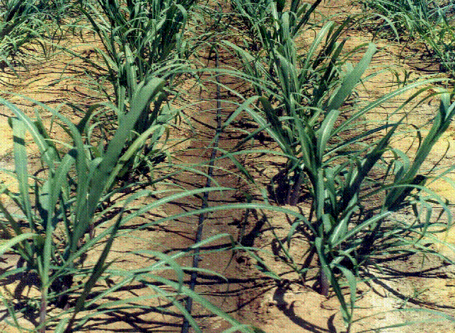 |
Paired row – Drip layout in sugarcane
Concept of fertigation
- Fertigation is the judicious application of fertilizers by combining with irrigation water.
-
Fertigation can be achieved through fertilizer tank, venturi System, Injector Pump, Non-Electric Proportional Liquid Dispenser (NEPLD) and Automated system
-
Recommended N & K @ of 275 and 112.5 kg. ha-1 may be applied in 14 equal splits with 15 days interval from 15 DAP.
-
25 kg N and 8 kg K2O per ha per split.
-
Urea and MOP (white potash) fertilisers can be used as N and K sources respectively
- Fertigation up to 210 DAP can also be recommended
.Advantages of Fertigation
-
Ensures a regular flow of water as well as nutrients resulting in increased growth rates for higher yields
-
Offers greater versatility in the timing of the nutrient application to meet specific crop demands
-
Improves availability of nutrients and their uptake by the roots
-
Safer application method which eliminates the danger of burning the plant root system
-
Offers simpler and more convenient application than soil application of fertilizer thus saving time, labour, equipment and energy
-
Improves fertilizer use efficiency
-
Reduction of soil compaction and mechanical damage to the crops
-
Potential reduction of environmental contamination
-
Convenient use of compound and ready-mix nutrient solutions containing also small concentration of micronutrients.
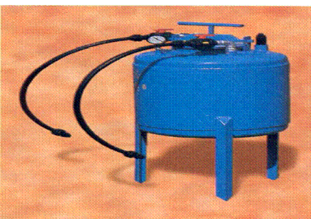
Fertilizer Tank |
Ventury |
Fertilizer pump |
Contingent plan
Gradual widening of furrow:
At the time of planting, form furrow at a width of 30 cm initially. After that, widen the furrow to 45 cm on 45th day during first light earthing up and subsequently deepen the furrow on 90th day to save 35% of water.
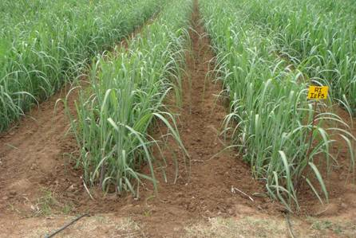 |
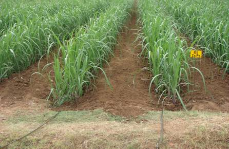 |
Subsurface irrigation in sugarcane
Pit method of sugarcane planting under drip fertigation system |
Technology
-
Pit to pit spacing - 1.5 x 1.5 m
-
Number of pits/ha - 4,444 pits
-
Pit diameter - 0.9 m
-
Pit depth - 0.38 m
-
Number of budded setts / pit- 32 (single budded setts)
-
Fill the pits to a depth of 15 cm with compost and native soil and mix it well. Place the healthy setts in circular fashion leaving 10 cm from the outer boundary of the pits with equal spacing between each setts and cover the setts with soil. On 50 to 60 days after planting give partial earthing up by sliding the soil from the outer boundary of the pit and full earthing up should be given leaving a depression of 2.5 cm from the ground level at 90 to 100 days after planting
-
Fertilizer dose - 275:62.5:112.5kg NPK/ha
-
The entire phosphorous dose can be applied as basal at the time of planting
-
The nitrogen and potassium as urea and MOP (white potash) should be applied through fertigation system in 14 equal splits starting from 15 DAP upto 210 DAP
-
Drip design -lateral to lateral spacing 3.0 m (alternate rows)
-
8 mm micro tubes on either side of the lateral to a length of 1.0 m with one 8 LPH drippers / pit
-
Irrigation - daily or in alternative days
Benefits
- Higher cane yield
- Multi rationing is possible
- Suited in problem soils
- More water saving
- System maintenance is easy
- Less labour for after cultivation operations
- Higher net return
Economics
Pit planting of cane in 1.5 m x 1.5 m pit spacing registered the highest net return of Rs.1, 19,649 ha-1 and 1, 55,982 ha-1 with in BCR of 2.26 and 3.31 in plant and ratoon crops respectively compared to the net return of Rs.1,16,650 and 1,27,360 registered in conventional method of cane cultivation in plant and ratoon crops.
Source: TNAU, Coimbatore, 2006
 Pit method of sugarcane planting under drip fertigation system
Pit method of sugarcane planting under drip fertigation systemDrought Management:
- Soak the setts in lime solution (80 kg Kiln lime in 400 lit) for one hour.
- Plant in deep furrows of 30 cm depth.
- Spray potash and urea each at 2.5 per cent during moisture stress period at 15 days interval.
- Spray Kaolin (60 g in 1 ltr. of water) to alleviate the water stress.
- Under water scarcity condition, alternate furrow and skip furrow method is beneficial.
- Apply 125 kg of MOP additionally at 120 day of planting.
- Basal incorporation of coir waste @ 25 tonnes/ha at the time of last ploughing.
- Removal of dry trash at 5th month and leave it as mulch, in the field.
VIII. Pre-Harvest Practices
a. Apply cane ripeners
i.Spray Sodium metasilicate 4 kg/ha in 750 litres of water on the foliage of crop at 6 months after planting.
ii.Repeat the same twice at 8th and 10th months to obtain higher cane yield and sugar percentage.
b. Assessing maturity of crops
i.Assess the maturity by hand refractometer brix survey and 18 to 20 per cent brix indicates optimum maturity for harvest.
ii.Top-bottom ratio of H.R.Brix reading should be 1:1.
15. Harvesting
i. Early varieties have to be harvested at 10 to 11 months age and mid-season varieties at 11 to 12 months age.
ii.Harvest the cane at peak maturity. Cut the cane to the ground level for both plant and ratoon crops.
Sugarcane management in saline soils
An integrated approach involving the measures indicated belowe to be employed to manage sugarcane under salinity and to improve productivity
Seed rate: Higher seed rate of 25 % is recommended to compensate for germination loss and to ensure adequate crop stand.
Trench planting: Modified trench system of planting in saline soils and salt irrigated areas has recorded improved yields around 15 %.
Use of organic manure: Organic manures viz., pressmud (10-15 t/ha), farmyard manure (25 t/ha), bio earth etc., improve the availability of essential nutrients (Zn, Fe, Ca, Mg and Mn).
Green manures: Growing green manure intercrop and in situ incorporation of green manures is highly beneficial to improve productivity in salt affected areas.
Nutrient management: 25% additional nitrogen dosage has been found to improve yields under saline conditions. Application of top dressing of nitrogen and potassium fertilizers through pocket manuring is advantageous and helps in improving yield significantly.
Sugarcane genotypes tolerant to salinity: Varieties Co 6806, Co 7219, Co 7717, Co 8208, Co 85004, Co 85019, Co 86032 and Coc 671 are suitable for salt affected soils.
Source: SBI, Coimbatore
Short Crop (Nursery Crop)
Selection fo proper planting months for raising nursery crop in relation to main field planting
Raise six to seven months old nursery crop prior to main field planting as follows:
| Raise nursery crop during |
Main field planting |
| June |
December - January (early season) |
| July |
February - March (Mid season) |
| August |
April - May (Late season) |
| Dec - Apr |
June - September (Special season) |
II. Precautions In Maintaining Nursery Crop
Adopt similar production techniques for raising short crop with the following modifications.
1. Do not detrash
2. Do not prop
3. Harvest at 6 to 7 months age
4. Remove trash by hand while preparing setts
5. Avoid bud damage
- Transport the seed material to other places in the forms of full canes with trash intact.
- Apply 50 kg of urea as top dressing additionally before one month of cutting the seed cane.
Ratoon Crop
I. Management Of The Field After Harvest Of The Plant Crop
Complete the following operations within 10 days of harvest of plant crop to obtain better establishment and uniform sprouting of shoots.
1.Remove the trash from the field. Do not burn it. Irrigate the field copiously.
2.Follow stubble shaving with sharp spades to a depth of 4 - 6 cm along the ridges at proper moisture.
3.Work with cooper plough along with sides of the ridges to break the compaction.
4.The gappy areas in the ratoon sugarcane crop should be filled within 30 days of stubble shaving. The sprouted cane stubbles taken from the same field is the best material for full establishment. The next best method is gap filling with seedlings raised in polybags.
5. Apply basal dose of organic manure and super phosphate as recommended for plant crop.
II. Management Of The Crop
- 25% additional N application on 5-7 days after ratooning.
- Spray Ferrous sulphate at 2.5 kg/ha on the 15th day. If chlorotic condition persists, repeat twice further at 15 days interval. Add urea 2.5 kg/ha in the last spray.
- Hoeing and weeding on 20th day and 40th to 50th day.
- First top dressing on 25th day, 2nd on 45th to 50th day.
- Final manuring on 70th to 75th day.
- Partial earthing up on 50th day. If junior-hoe is worked two or three times upto 90th day, partial earthing up is not necessary.
- Final earthing up on 90th day.
- Detrashing on 120th and 180th day.
- Trash twist propping on 180th day.
- Harvest after 11 months.
CROP PHYSIOLOGY
Foliar spray of TNAU Sugarcane Booster @ 1.0, 1.5 and 2 kg/acre in 200 litres of water at 45,60 and 75 days after planting enhances cane growth and weight, internodal length, cane yield, sugar content and offers drought tolerance.
Post Harvest Technology